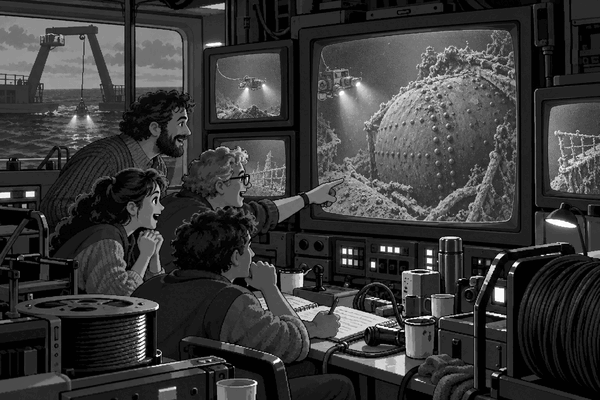

FACT
Titanic sank in 1912.
For many years, no one knew exactly where it rested.
The North Atlantic was wide.
The sea floor was dark and very deep.
Then, in 1985, a French and American team began a careful search.
First, the French ship Le Suroit used sonar.
Sonar sends sound into the water and listens for echoes.
Next came the American research ship Knorr.
It carried a clever machine called Argo.
Argo was not a submarine for people.
It was a strong camera sled.
A long cable joined it to the ship.
The ship pulled Argo just above the sea floor.
Its lamps lit a small patch of darkness.
Its cameras sent pictures up the cable.
On Knorr, the team watched the screens.
Hour after hour, they saw mud and stones.
They did not stop.
They steered the ship in long, neat paths.
The team had a smart plan.
They did not look only for the huge ship.
They also looked for small things that had fallen from it.
A trail of objects might lead them to Titanic.
Late on 31 August, bits of metal appeared.
More pieces followed.
Then a giant round shape filled the screen.
It was a boiler.
Rows of rivets covered its metal shell.
The pattern matched a boiler from Titanic.
The tired team stared.
They had found the trail!
It was now 1 September 1985.
Argo followed the debris across the sea floor.
Soon, the cameras found the great wreck itself.
Deep-sea fact: Titanic rests about 3,800 metres below the surface. Sunlight cannot reach that far, so Argo needed powerful lamps.
The discovery helped people learn more about Titanic.
It also showed that teamwork mattered.
French sonar had searched the area.
American cameras had followed the trail.
Ships, cables, maps and patient people all played a part.
Titanic is still deep beneath the waves.
It is an important resting place.
Today, explorers study it with care and respect.
And the little camera sled that helped find it has a big place in history.
1. What sent pictures up to the research ship?
2. Why did the team follow the scattered debris?
3. What large object helped the team know it was Titanic?